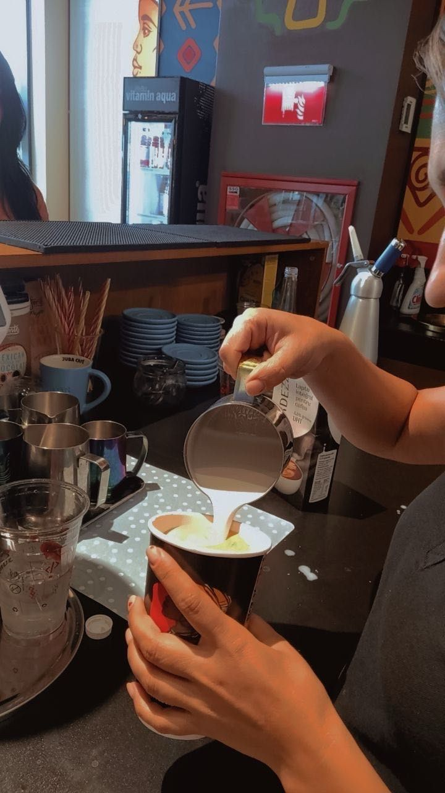

La început doar priveam la colegii mei cum lucrează, iar treaba mea era de debarasare. Însă, am învățat destul de repede și am fost atentă la toate detaliile pentru a îmi face treaba cât mai bine. După ce am învățat produsele, am stat și la casă pentru a lua comenzi. Am învățat ce este lucrul cu omul, deși este foarte frumos și interesant, este și greu. Câteodată primeam zâmbete, tips și încurajări pentru că eram cea mai mică și cea mai nouă, iar câteodată primeam critici negative și încercam să nu mă descurajez.
